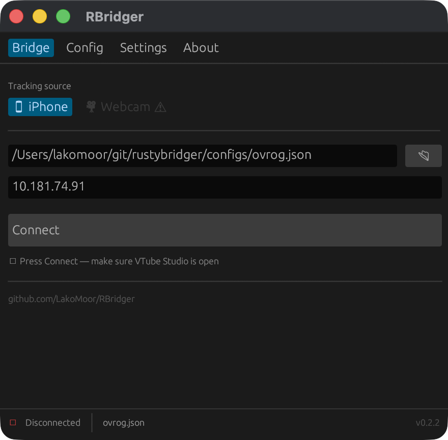
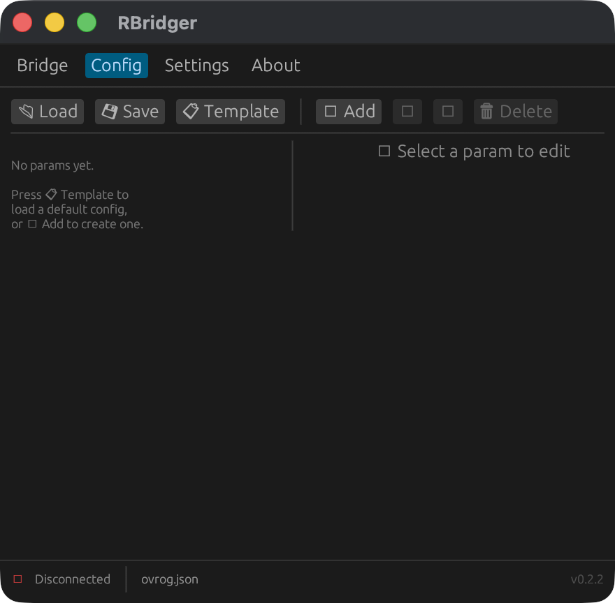
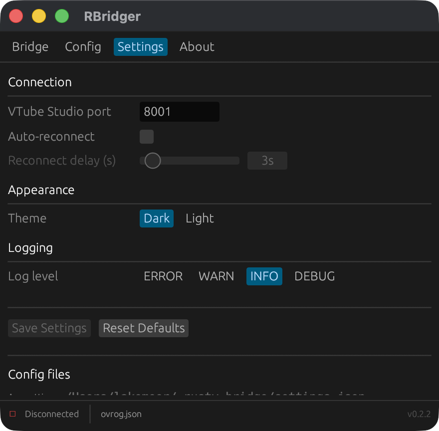
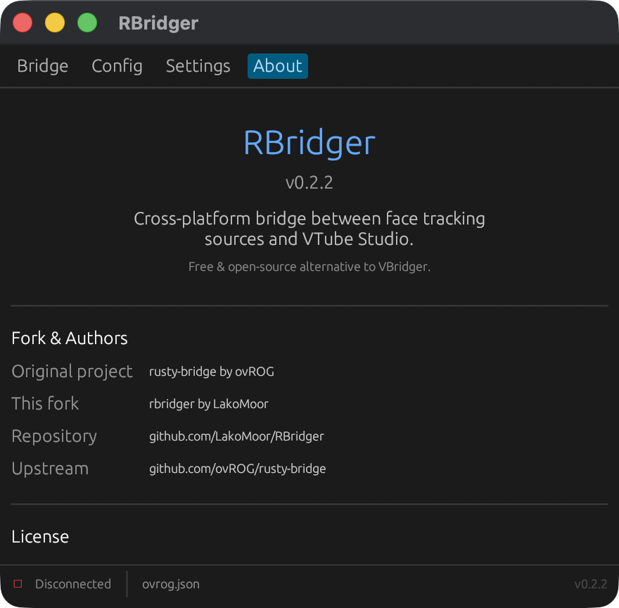

🦀 Built with Rust & egui
Face tracking bridge
for VTube Studio
Free, open-source alternative to VBridger. Supports iPhone ARKit (50+ blend shapes) and webcam neural tracking.

Free, open-source alternative to VBridger. Supports iPhone ARKit (50+ blend shapes) and webcam neural tracking.




| Feature | RBridger | VBridger |
|---|---|---|
| iPhone tracking (ARKit) | ✓ Full 50+ shapes | ✓ |
| Webcam tracking | ✓ ONNX neural | ✓ |
| Transform config editor | ✓ Built-in, formula-based | Basic |
| Price | Free | Paid (~$10) |
| Open source | ✓ GPL-3.0 | ✗ |
| macOS / Linux / Windows | ✓ All three | Windows / macOS |